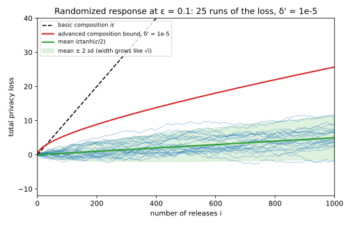
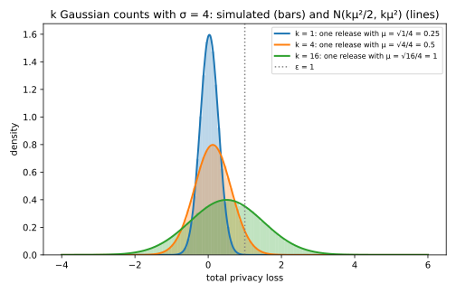
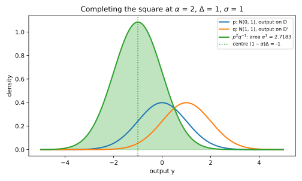
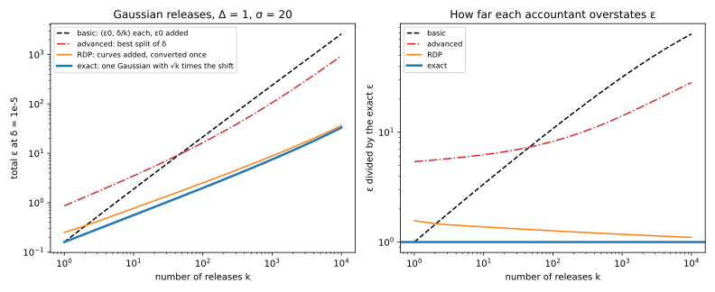

Appendix B — Composing private releases
A private system almost never releases one number. A dashboard publishes a hundred counts, an analyst asks one query after another, and a training run takes thousands of noisy steps. Each release on its own may be private, but an attacker sees all of them together. So this appendix derives the total privacy cost of a number \(k\) of releases and the noise each one needs to keep the whole set within a budget. It ends with a comparison of the ways to add up the cost.
Everything here rests on one quantity. A mechanism \(M\) is differentially private if changing one person’s record, which turns a dataset \(D\) into a neighbouring dataset \(D'\), barely changes the distribution of its output. The privacy loss of an output \(y\) is the logarithm of how much more likely \(y\) is under \(D\) than under \(D'\). For a budget \(\varepsilon\), pure \(\varepsilon\)-differential privacy (DP) says this loss is between \(-\varepsilon\) and \(\varepsilon\) for every output. Approximate \((\varepsilon, \delta)\)-DP asks instead that every set \(S\) of outputs, for every pair of neighbours, satisfies \[\Pr_D[S] \le e^\varepsilon\Pr_{D'}[S] + \delta, \tag{B.1}\] where \(\Pr_D[S]\) is the chance that the output lands in \(S\) when the data are \(D\). The small slack \(\delta\) lets rare outputs break the factor \(e^\varepsilon\). Section A.1 in the appendices states both definitions in full, with examples.
The one idea of this page is that the privacy loss of several releases is the sum of their separate losses. A method that adds up the cost of many releases from this sum is an accountant. Table B.1 lists the derivations and the chapter sections that use them.
| Derivation | Where the chapters state or use it |
|---|---|
| Basic composition: budgets add (Section B.1) | Section 19.3; every accountant starts here |
| Advanced composition: \(\sqrt k\) instead of \(k\) (Section B.2) | Section 21.1, Section 21.2 |
| \(k\) Gaussian releases are one Gaussian release (Section B.3) | Section 19.3, Section 20.4, Section 32.4 |
| Rényi DP of the Gaussian, and why it adds (Section B.4) | Section 29.2, Section 29.3, Section 29.6 |
| Comparing the four ways to add up the cost (Section B.5) | Section 21.4, Section 37.1 |
Notation. The \(k\) mechanisms are \(M_1, \dots, M_k\), run on the same dataset, and their outputs are \(y_1, \dots, y_k\). For one mechanism, \(p(y)\) is the probability (or density) of the output \(y\) when the data are \(D\), and \(q(y)\) is the same when the data are \(D'\). The privacy loss is \[L(y) = \ln\frac{p(y)}{q(y)}. \tag{B.2}\] For Gaussian noise, \(\sigma\) is the standard deviation of the noise and \(\Delta\) is the \(\ell_2\) sensitivity, the largest ordinary (Euclidean) distance by which one record can move the true answer, which may be a vector. Their ratio, the shift in units of the noise, is \(\mu = \Delta/\sigma\). The accounting chapters take \(\Delta = 1\) and call \(\sigma\) the noise multiplier, so their \(\sigma\) is this page’s \(\sigma\) with \(\Delta = 1\). The standard normal cumulative distribution function is \(\Phi\), and logarithms are natural.
Neighbours differ by one record added or removed, or by one record replaced. The choice changes the sensitivity of a query, but no argument on this page, as long as every release uses the same relation.
B.1 Basic composition: the budgets add
B.1.1 The question
You release \(k\) answers from the same dataset, each with its own fresh noise and each private on its own. What guarantee holds for all \(k\) together, also when the earlier answers decide each query?
B.1.2 The answer
If release \(i\) is \((\varepsilon_i, \delta_i)\)-DP, then the \(k\) releases together are \[\Big(\sum_{i=1}^k\varepsilon_i,\ \sum_{i=1}^k\delta_i\Big)\text{-DP}. \tag{B.3}\] Here \(\varepsilon_i\) is the budget of release \(i\), and \(\delta_i\) its slack. The same holds when the earlier outputs decide release \(i\), as long as its budget is fixed in advance. Section 19.3 states this as Equation 19.10.
B.1.3 A worked example
A dashboard publishes 10 counts, such as the number of patients in each of 10 clinics. One person changes each count by at most 1, so each count has sensitivity 1, and Laplace noise of scale \(b = 1/0.1 = 10\) makes it \(0.1\)-DP (Section A.3). By Equation B.3 the 10 counts together are \(10 \times 0.1 = 1\)-DP.
To see why one noisy count is \(0.1\)-DP, say the true count is 0 on \(D\) and 1 on \(D'\). The Laplace density with scale \(b\) is \(\frac{1}{2b}e^{-|z|/b}\). The constant \(\frac{1}{2b}\) cancels in the ratio, so the privacy loss of an output \(y\) is the difference of the two exponents, \[L(y) = \frac{|y - 1| - |y|}{b}. \tag{B.4}\] For \(y \le 0\) this is \(\big((1 - y) - (-y)\big)/b = 1/b = 0.1\). For \(y \ge 1\) it is \(-0.1\), and in between it moves in a straight line from one to the other (Figure B.1, left). So the loss never leaves \([-0.1, 0.1]\).
The bound of 1 for the 10 counts is reached. Each count’s loss is \(+0.1\) exactly when its output is at most 0, its true value on \(D\). Under \(D\) the noise is symmetric around 0, so this happens with probability \(\frac12\), and all 10 counts do it at once with probability \((\frac12)^{10} = 0.000977\). So for pure DP, basic composition is exact in the worst case. But that case is rare, and the gap between the worst and the typical loss is what the next section uses.
B.1.4 Why it works
Pure DP, outputs with independent noise. The proof writes the probability of all \(k\) outputs as a product, so that the ratio of two such probabilities is a product of ratios, and its log is a sum.
- The joint probability is a product. Each release uses its own fresh noise, so for a fixed dataset the outputs are independent. So the probability of \(y_1, \dots, y_k\) together is \(p(y_1, \dots, y_k) = p_1(y_1)\cdots p_k(y_k)\), and the same holds for \(q\).
- The ratio is a product of ratios. Divide one product by the other, term by term: \[\frac{p(y_1, \dots, y_k)}{q(y_1, \dots, y_k)} = \frac{p_1(y_1)}{q_1(y_1)} \cdots \frac{p_k(y_k)}{q_k(y_k)}. \tag{B.5}\]
- Each factor is bounded. Release \(i\) is \(\varepsilon_i\)-DP, so its ratio lies between \(e^{-\varepsilon_i}\) and \(e^{\varepsilon_i}\).
- Multiply the bounds and take logs. The product lies between \(e^{-\sum\varepsilon_i}\) and \(e^{\sum\varepsilon_i}\). The logarithm of a product is the sum of the logarithms, so the total loss is \(L = L_1(y_1) + \dots + L_k(y_k)\), and \(|L| \le \sum_i\varepsilon_i\) at every output. That is pure \(\sum_i\varepsilon_i\)-DP.
Figure B.1 draws this for two counts. The loss of the pair is the sum of two steps, so it reaches \(2\varepsilon\) only in the corner where both outputs have the largest loss.

Adaptive releases. Now suppose you choose the second query after you read the first answer. The outputs are no longer independent, so step 1 needs the chain rule of probability instead. The chance of \(y_1\) and then \(y_2\) is the chance of \(y_1\), times the chance of \(y_2\) given that the first output was \(y_1\): \[p(y_1, y_2) = p_1(y_1)\,p_2(y_2 \mid y_1). \tag{B.6}\] The ratio is again a product of two ratios, and the second one, \(p_2(y_2 \mid y_1)/q_2(y_2 \mid y_1)\), is the ratio of the mechanism you chose after seeing \(y_1\). If every mechanism you might choose is \(\varepsilon_2\)-DP, that ratio lies between \(e^{-\varepsilon_2}\) and \(e^{\varepsilon_2}\), whatever \(y_1\) was. So steps 2 to 4 go through unchanged. With \(k\) releases the chain rule has \(k\) factors, one per release.
For a small case, randomized response at level \(\varepsilon\) reports a person’s secret bit truthfully with probability \(e^\varepsilon/(1 + e^\varepsilon)\) and flips it otherwise. Ask once at level \(\ln 3\), which tells the truth with probability \(\frac34\). If the answer is 1, ask again at \(\ln 3\). If it is 0, ask again at \(\ln 2\), which tells the truth with probability \(\frac23\). Take \(D\) to be the dataset where the person’s bit is 1 and \(D'\) the one where it is 0. Table B.2 lists the four outcomes.
| Answers \((y_1, y_2)\) | Probability on \(D\) | Probability on \(D'\) | Privacy loss \(L\) |
|---|---|---|---|
| \((1, 1)\) | \(\frac34 \cdot \frac34 = 0.5625\) | \(\frac14 \cdot \frac14 = 0.0625\) | \(\ln 3 + \ln 3 = 2.1972\) |
| \((1, 0)\) | \(\frac34 \cdot \frac14 = 0.1875\) | \(\frac14 \cdot \frac34 = 0.1875\) | \(\ln 3 - \ln 3 = 0\) |
| \((0, 1)\) | \(\frac14 \cdot \frac23 = 0.1667\) | \(\frac34 \cdot \frac13 = 0.2500\) | \(-\ln 3 + \ln 2 = -0.4055\) |
| \((0, 0)\) | \(\frac14 \cdot \frac13 = 0.0833\) | \(\frac34 \cdot \frac23 = 0.5000\) | \(-\ln 3 - \ln 2 = -1.7918\) |
Each row’s loss is the first answer’s loss plus the loss of whichever second mechanism the first answer chose. The largest loss is \(2.1972 = 2\ln 3\), which equals the basic bound \(\ln 3 + \ln 3\), with the second budget \(\ln 3\), the larger of the two levels the second step could use.
Approximate DP. An \((\varepsilon, \delta)\)-DP mechanism may have outputs whose loss exceeds \(\varepsilon\), or is even infinite, as long as they are rare. For example, the Gaussian mechanism’s loss is a straight line in the output, so it has no largest value, and the product argument fails. The argument that replaces it rests on the bad-event fact, which this page uses again later: for any threshold \(\tau\) and any set \(S\) of outputs, \[\Pr_D[S] \le e^\tau\Pr_{D'}[S] + \Pr_D[L > \tau]. \tag{B.7}\] To see it, split \(S\) into the outputs whose loss is at most \(\tau\) and the rest. On the first part \(\ln(p/q) \le \tau\), so \(p \le e^\tau q\) output by output, and the sum over that part is at most \(e^\tau\Pr_{D'}[S]\). The second part lies inside the event \(L > \tau\), so its probability is at most \(\Pr_D[L > \tau]\). So if the loss exceeds \(\tau\) with probability at most \(\delta\) when the data are \(D\), then \(\Pr_D[S] \le e^\tau\Pr_{D'}[S] + \delta\) for every \(S\). DP also asks for the same bound with \(D\) and \(D'\) swapped, and the same argument gives it.
Now suppose each release satisfies a tail condition: whatever the earlier outputs were, its loss exceeds \(\varepsilon_i\) with probability at most \(\delta_i\). Then the composition is \((\sum\varepsilon_i, \sum\delta_i)\)-DP, in three steps.
- A large total needs a large term. If every \(L_i\) is at most \(\varepsilon_i\), the sum is at most \(\sum_i\varepsilon_i\). So the total can exceed \(\sum_i\varepsilon_i\) only if at least one term exceeds its own \(\varepsilon_i\).
- Union bound. The chance that at least one of several events happens is at most the sum of their chances, so \[\Pr\Big[L > \sum_i\varepsilon_i\Big] \le \sum_i\Pr[L_i > \varepsilon_i] \le \sum_i\delta_i. \tag{B.8}\] In the adaptive case, the chance that term \(i\) exceeds \(\varepsilon_i\) is an average, over the earlier outputs, of a conditional chance that is at most \(\delta_i\). So it is at most \(\delta_i\) too.
- Bad-event fact. Equation B.7 with \(\tau = \sum_i\varepsilon_i\) gives the result.
The tail condition is enough for \((\varepsilon, \delta)\)-DP, but it asks for more. The classic Gaussian calibration proves exactly this condition (Section 20.3), but some \((\varepsilon, \delta)\)-DP mechanisms do not satisfy it. For example, take a mechanism whose output A has probability \(\frac12\) on \(D\) and \(\frac12 e^{-1.1} = 0.1664\) on \(D'\), while output B takes the rest, \(\frac12\) and \(0.8336\). Output A has loss 1.1, above 1, half the time, so the tail condition at \(\varepsilon = 1\) fails. Yet the only set that breaks the factor \(e\) is \(\{A\}\), by just \(\frac12 - e \times 0.1664 = 0.0476\), so the mechanism is \((1, 0.0476)\)-DP. Basic composition still holds for such releases: Section 19.3 proves it with a two-step argument on events, and Section J.1 through four-point randomized response.
B.1.5 Checking it
A simulation of a million runs of the 10-count dashboard finds the largest total loss to be exactly 1.0000, reached in a fraction 0.000997 of runs against the exact 0.000977. The mean loss is only 0.0484, which matches the exact value: 10 times the mean loss of one count, \(\varepsilon + e^{-\varepsilon} - 1\) at \(\varepsilon = 0.1\). That formula is the integral of the loss of Figure B.1 against the Laplace density. The script also recomputes Table B.2 and the two-output pair. So the bound is exact for the worst output, and very loose for the typical one.
B.1.6 Recipe and pitfalls
To share a total budget \((\varepsilon, \delta)\) among \(k\) releases with basic composition, follow three steps.
- Give release \(i\) a share \(\varepsilon_i\) and \(\delta_i\), so that the shares add up to \(\varepsilon\) and \(\delta\). Equal shares \(\varepsilon/k\) and \(\delta/k\) are the simplest choice.
- Calibrate each release to its share, for example with Laplace noise of scale \(\Delta_1/\varepsilon_i\), where \(\Delta_1\) is its \(\ell_1\) sensitivity, the largest total of the absolute changes one record can make to its answers.
- Draw fresh, independent noise for every release.
Do not use one noise draw for two different queries. That breaks step 1 of the derivation, because the outputs are no longer independent given the data, and the difference of the two answers cancels the noise exactly. To publish the same noisy answer twice is fine, though, since the copy comes from the output without access to the data. Budgets chosen from the answers, such as “stop when the answer looks good”, are not covered, because each budget must be fixed in advance (Section 36.3 handles them). The \(\delta_i\) add up, so \(k\) releases at \(\delta_i = 10^{-5}\) give \(k \times 10^{-5}\). And for many releases the bound is far too large, as the next section shows.
B.2 Advanced composition: \(\sqrt k\) instead of \(k\)
B.2.1 The question
You publish 100 counts, each \(0.1\)-DP. Basic composition says the total is \(\varepsilon = 10\), which is almost no guarantee, because it allows some output to be up to \(e^{10} \approx 22{,}000\) times more likely on one dataset than on its neighbour. If you accept a tiny slack \(\delta'\), can you claim a much smaller \(\varepsilon\)?
B.2.2 The answer
Yes. Take \(k\) releases that are each \(\varepsilon\)-DP and any slack \(\delta' > 0\). Together they are \((\varepsilon', \delta')\)-DP with \[\varepsilon' = \varepsilon\sqrt{2k\ln(1/\delta')} + k\varepsilon(e^\varepsilon - 1). \tag{B.9}\] The first term grows like \(\sqrt k\), and the second is small when \(\varepsilon\) is small, because \(e^\varepsilon - 1 \approx \varepsilon\). When each release is \((\varepsilon, \delta)\)-DP instead, the total slack is \(k\delta + \delta'\). This is the theorem of Dwork, Rothblum and Vadhan, Equation 21.9 in Section 21.2. The chapter also gives a sharper form whose second term is \(k\varepsilon\tanh(\varepsilon/2)\). The hyperbolic tangent \(\tanh(x) = (e^{2x} - 1)/(e^{2x} + 1)\) is close to \(x\) for small \(x\), so this term is about half the one above.
B.2.3 A worked example
Take \(k = 100\), \(\varepsilon = 0.1\) and \(\delta' = 10^{-5}\). Then \(\ln(1/\delta') = 11.5129\), so the first term is \[0.1\sqrt{200 \times 11.5129} = 0.1\sqrt{2302.6} = 4.7985. \tag{B.10}\] The second term is \(100 \times 0.1 \times (e^{0.1} - 1) = 1.0517\). Their sum is \(\varepsilon' = 5.8502\), against 10 for basic composition. The sharper \(\tanh\) form gives 5.2981. The best bound that holds for every \(0.1\)-DP release, the optimal composition of Section 21.4, gives 4.3068.
B.2.4 Why it works
The idea: a random walk. The total loss is a sum of \(k\) terms, one per release, each between \(-\varepsilon\) and \(\varepsilon\). Basic composition assumes every term is \(+\varepsilon\) at once, but the terms are random and partly cancel, like the steps of a random walk. The variances of independent steps add, so after \(k\) steps the variance is \(k\) times that of one step, and the typical distance from the start, its square root, grows like \(\sqrt k\). The walk also drifts upward a little, because each term has a small positive average when the data are \(D\). So the total loss is a small drift plus a fluctuation of order \(\varepsilon\sqrt k\).
Randomized response shows the walk in its plainest form. At level \(\varepsilon\) each answer has loss exactly \(+\varepsilon\) if it is truthful and \(-\varepsilon\) if it is flipped, so the total loss of \(k\) answers is a walk with steps of \(\pm\varepsilon\) (Figure B.2). It is also the right case to look at, because no \(k\) releases that are each \(\varepsilon\)-DP need a larger \(\delta\), at any total \(\varepsilon\), than \(k\) randomized responses do (Section 21.4).
Steps 1 to 3 bound the drift, steps 4 to 6 bound the fluctuation by a tail bound, and step 7 converts the result with the bad-event fact Equation B.7.
The loss is a sum of bounded terms. By Section B.1 the total loss is \(L = L_1 + \dots + L_k\), where \(L_i\) is the loss of release \(i\) given the earlier outputs. Each release is \(\varepsilon\)-DP whatever the history, so \(-\varepsilon \le L_i \le \varepsilon\).
Each term has a small average. Write \(m_i\) for the average of \(L_i\) on \(D\), given the earlier outputs. The claim is that, for one \(\varepsilon\)-DP release with output probabilities \(p\) and \(q\), \[m = \sum_y p(y)\ln\frac{p(y)}{q(y)} \le \varepsilon(e^\varepsilon - 1). \tag{B.11}\] The proof uses one inequality about the logarithm of a positive number \(x\), \[\ln x \le x - 1. \tag{B.12}\] It holds because the line \(x - 1\) touches the curve \(\ln x\) at \(x = 1\) and the curve bends down away from it. The first of three sub-steps adds a term to \(m\) that pairs the positive and negative losses, output by output.
- Add a term that is never negative. Apply \(\ln x \le x - 1\) with \(x = p/q\) and average under \(q\). This gives \(\sum_y q\ln(p/q) \le \sum_y q(p/q - 1) = \sum_y p - \sum_y q = 0\). With the sign flipped, and \(-\ln(p/q) = \ln(q/p)\), the sum \(\sum_y q\ln(q/p)\) is never negative. So its addition to \(m\) can only make \(m\) larger, and the two sums combine term by term: \[m \le \sum_y p\ln\frac pq + \sum_y q\ln\frac qp = \sum_y (p - q)\ln\frac pq. \tag{B.13}\]
- Use the bound on the loss. Each \(|\ln(p/q)|\) is at most \(\varepsilon\), so \(m \le \varepsilon\sum_y|p - q|\).
- Bound the total difference. Write \(|p - q| = q\,|p/q - 1|\). The ratio \(p/q\) lies between \(e^{-\varepsilon}\) and \(e^\varepsilon\), so \(|p/q - 1|\) is at most \(e^\varepsilon - 1\), its value at the upper end, which is larger than \(1 - e^{-\varepsilon}\) at the lower end. The \(q(y)\) add up to 1, so \(\sum_y|p - q| \le e^\varepsilon - 1\).
For randomized response the average is easy to compute directly. Write \(t = e^\varepsilon/(1 + e^\varepsilon)\) for the chance of a truthful answer on \(D\), whose loss is \(+\varepsilon\), while a flipped answer has loss \(-\varepsilon\). So \(m = \varepsilon t - \varepsilon(1 - t) = \varepsilon(2t - 1)\), and with the value of \(t\), \(2t - 1 = (e^\varepsilon - 1)/(e^\varepsilon + 1) = \tanh(\varepsilon/2)\), so \(m = \varepsilon\tanh(\varepsilon/2)\). At \(\varepsilon = 0.1\) this \(m\) is 0.0050, while the bound of Equation B.11 is 0.0105, and at \(\varepsilon = 1\) they are 0.4621 and 1.7183. So the bound is about twice too large for small \(\varepsilon\), which is where the chapter’s sharper \(\tanh\) form comes from.
Centre the terms. Write \(X_i = L_i - m_i\). Given the earlier outputs, \(X_i\) has average zero, and it lies in an interval of length \(2\varepsilon\), from \(-\varepsilon - m_i\) to \(\varepsilon - m_i\). The total loss is the drift plus the sum of these centred terms, \(L = \sum_i m_i + \sum_i X_i\), and the drift is at most \(k\varepsilon(e^\varepsilon - 1)\) by step 2.
One centred term has a small exponential average. Steps 4 and 5 bound the average of \(e^{\lambda X}\) for a number \(\lambda > 0\) of our choice, because an exponential magnifies large values, and step 6 turns that into a tail bound. Hoeffding’s lemma says that a variable \(X\) with average zero, which stays in an interval of length \(d\), satisfies \[\mathbb E\big[e^{\lambda X}\big] \le e^{\lambda^2d^2/8} \qquad \text{for every real } \lambda. \tag{B.14}\] Its proof compares \(X\) with a variable that sits only at the two ends of the interval, which has the largest exponential average (Lemma 2.2). With \(d = 2\varepsilon\) the right side is \(e^{\lambda^2\varepsilon^2/2}\).
The bounds multiply, even when releases adapt. Write \(W_j = X_1 + \dots + X_j\) for the running sum, so that \(e^{\lambda W_k} = e^{\lambda W_{k-1}}e^{\lambda X_k}\). Average this product in two stages, first over the last output with the earlier ones fixed and then over the earlier ones. With the earlier outputs fixed, \(e^{\lambda W_{k-1}}\) is a fixed number, and step 4 bounds the average of \(e^{\lambda X_k}\) by \(e^{\lambda^2\varepsilon^2/2}\) whatever the history was. So \[\mathbb E\big[e^{\lambda W_k}\big] \le e^{\lambda^2\varepsilon^2/2}\,\mathbb E\big[e^{\lambda W_{k-1}}\big] \le \dots \le e^{k\lambda^2\varepsilon^2/2}. \tag{B.15}\] So each release may depend on the past, but the bound on its own term does not. This argument is Azuma’s inequality.
Turn the exponential average into a tail bound. Markov’s inequality says that a quantity that is never negative exceeds a level \(a\) with probability at most its average divided by \(a\). Apply it to \(e^{\lambda W_k}\) at the level \(a = e^{\lambda s}\), for a value \(s\) chosen below. For \(\lambda > 0\) the event \(W_k \ge s\) is the event \(e^{\lambda W_k} \ge e^{\lambda s}\), so \[\Pr[W_k \ge s] \le e^{-\lambda s + k\lambda^2\varepsilon^2/2}. \tag{B.16}\] The exponent is a parabola in \(\lambda\). Its derivative \(-s + k\lambda\varepsilon^2\) is zero at \(\lambda = s/(k\varepsilon^2)\), where the exponent equals \(-s^2/(2k\varepsilon^2)\). Setting \(e^{-s^2/(2k\varepsilon^2)} = \delta'\) and solving gives the level \[s = \varepsilon\sqrt{2k\ln(1/\delta')}. \tag{B.17}\]
Convert. If \(L > \varepsilon'\), then \(\sum_i X_i = L - \sum_i m_i > \varepsilon' - k\varepsilon(e^\varepsilon - 1) = s\). So \(\Pr[L > \varepsilon'] \le \delta'\), and the bad-event fact Equation B.7 with \(\tau = \varepsilon'\) gives \((\varepsilon', \delta')\)-DP. The same argument with \(D\) and \(D'\) swapped covers the other direction.
When each release is \((\varepsilon, \delta)\)-DP with \(\delta > 0\), its loss can exceed \(\varepsilon\) on rare outputs, so step 1 fails. The fix uses a fact that Section 21.4 and Section J.1 prove. Every such release behaves like a processed version of a simple mechanism that, with probability \(\delta\), announces which dataset it ran on, and otherwise runs \(\varepsilon\)-DP randomized response. Then the \(k\) announcements cost at most \(k\delta\) by the union bound, and the rest is the argument above.
B.2.5 Checking it
The script computes the loss of 100 randomized-response answers at \(\varepsilon = 0.1\) exactly, from the binomial count of truthful answers. Its mean is 0.4996 and its standard deviation 0.9988, so the bound \(\varepsilon' = 5.8502\) sits more than five standard deviations above the mean. The exact chance that the loss exceeds it is \(1.022 \times 10^{-8}\), far below \(\delta' = 10^{-5}\). The exact \(\delta\) at that \(\varepsilon'\) (step 4 of Section B.3 shows how to compute it) is smaller still, \(1.956 \times 10^{-9}\). So advanced composition is valid but conservative, for three reasons. Hoeffding’s lemma allows for a larger spread than the walk has, step 2 doubles the drift, and the bad-event fact counts every output above \(\varepsilon'\) in full.
Figure B.2 draws 25 runs of the walk over 1000 answers. In 100,000 simulated runs of 1000 answers, the largest total loss was 18.4, while basic composition says 100 and advanced composition 25.6914.

B.2.6 Recipe and pitfalls
To spend a total budget \((\varepsilon_{\mathrm{total}}, \delta')\) on \(k\) releases that are each \(\varepsilon\)-DP, set the leading term of Equation B.9 equal to the target. Then each release gets roughly \[\varepsilon \approx \frac{\varepsilon_{\mathrm{total}}}{\sqrt{2k\ln(1/\delta')}}. \tag{B.18}\] Then evaluate Equation B.9 with that \(\varepsilon\), and lower it a little if the second term pushes the total over the target.
Advanced composition is worse than basic composition when \(k\) is small. Its first term is \(\varepsilon\sqrt k\) times \(\sqrt{2\ln(1/\delta')}\), which is 4.80 at \(\delta' = 10^{-5}\), while basic composition is \(\varepsilon k = \varepsilon\sqrt k \times \sqrt k\). So \(\sqrt k\) must beat 4.80 and more. If you set the two bounds equal and solve for \(k\), at \(\varepsilon = 0.1\) advanced composition wins only once \(k\) exceeds \(2\ln(1/\delta')/(2 - e^\varepsilon)^2 = 28.76\). So always compute both and keep the smaller. For \(\varepsilon \ge \ln 2\) the second term alone is at least \(k\varepsilon\), so the \(e^\varepsilon - 1\) form never wins, and you need the \(\tanh\) form of the chapter. And when you know more than each release’s \(\varepsilon\), for example that the noise is Gaussian, the next two sections do much better.
B.3 Gaussian releases: \(k\) of them are one
B.3.1 The question
You add Gaussian noise of standard deviation \(\sigma\) to \(k\) answers, each with sensitivity \(\Delta\). What is the exact \((\varepsilon, \delta)\) guarantee of all \(k\) together, and how much noise must each answer get to meet a total budget?
B.3.2 The answer
The \(k\) releases are exactly as private as one Gaussian release whose sensitivity is \(\sqrt k\,\Delta\), with the same noise \(\sigma\). In units of the noise, that single release has the shift \[\mu_k = \frac{\sqrt k\,\Delta}{\sigma}. \tag{B.19}\] So the smallest valid \(\delta\) at a given \(\varepsilon\) is the exact Gaussian formula with \(\mu_k\) in place of \(\Delta/\sigma\): \[\delta(\varepsilon) = \Phi\Big(\frac{\mu_k}{2} - \frac{\varepsilon}{\mu_k}\Big) - e^\varepsilon\,\Phi\Big(-\frac{\mu_k}{2} - \frac{\varepsilon}{\mu_k}\Big). \tag{B.20}\] Read backwards, it gives the noise for \(k\) releases at a total budget. If \(\sigma_1\) is the noise that makes one release \((\varepsilon, \delta)\)-DP, then \[\sigma_k = \sqrt k\,\sigma_1 \tag{B.21}\] makes \(k\) releases together \((\varepsilon, \delta)\)-DP. The single-release formula is Equation 20.16 in Section 20.4, and Section A.7 derives it.
B.3.3 A worked example
You want 10 counts with sensitivity 1 to be \((1, 10^{-5})\)-DP together. One count at \((1, 10^{-5})\) needs \(\sigma_1 = 3.7306\), from the exact calibration. By Equation B.21 each of the 10 counts gets \(\sigma_{10} = \sqrt{10} \times 3.7306 = 11.797\), and \(\mu_{10} = \sqrt{10}/11.797\) in Equation B.20 gives back \(\varepsilon = 1.0000\) at \(\delta = 10^{-5}\).
Basic composition would instead split the budget evenly, \((0.1, 10^{-6})\) per count, and the exact calibration for that share needs \(\sigma = 36.305\). That is 3.08 times more noise for the same total guarantee. With 100 counts the two answers are \(\sigma_{100} = 37.306\) and 362.02, a factor of 9.70.
B.3.4 Why it works
The proof shows that the loss of one release is normal (step 1), that the sum of \(k\) losses is the loss of one release with \(\sqrt k\) times the shift (steps 2 and 3), and that the smallest \(\delta\) depends only on the distribution of the loss (step 4).
- The loss of one release is normal. Take one count whose true value is 0 on \(D\) and \(\Delta\) on \(D'\), and write the output on \(D\) as \(y = z\), where \(z\) is the noise. The same output \(y\) sits at distance \(z - \Delta\) from the centre on \(D'\). The normal density with standard deviation \(\sigma\) is proportional to \(e^{-z^2/(2\sigma^2)}\), so the loss is a difference of two exponents: \[L = \frac{(z - \Delta)^2 - z^2}{2\sigma^2} = \frac{\Delta^2 - 2\Delta z}{2\sigma^2}. \tag{B.22}\] This is a straight line in the noise \(z\). Its mean is \(\Delta^2/(2\sigma^2) = \mu^2/2\), because \(z\) has mean 0, and its variance is \((\Delta/\sigma^2)^2\sigma^2 = \mu^2\), because multiplying \(z\) by a constant multiplies the variance by its square. A straight-line function of a normal variable is normal, so on \(D\) \[L \sim \mathcal N\Big(\frac{\mu^2}{2},\ \mu^2\Big), \qquad \mu = \frac{\Delta}{\sigma}. \tag{B.23}\]
- Add \(k\) independent losses. With fresh noise for each release, the \(k\) losses are independent, and the total loss is their sum (Section B.1). Means add, and so do variances of independent terms. A sum of independent normal variables is normal (Section E.1 proves it). So the total loss is normal with mean \(k\mu^2/2\) and variance \(k\mu^2\).
- Recognize one release. A single release with shift \(\mu_k = \sqrt k\,\mu\) has, by step 1, a loss with mean \(\mu_k^2/2 = k\mu^2/2\) and variance \(\mu_k^2 = k\mu^2\). That is the same normal distribution as in step 2.
- The exact \(\delta\) depends only on the loss. By the definition of \((\varepsilon, \delta)\)-DP in the opening, the smallest \(\delta\) at a given \(\varepsilon\) is the largest gap \(\Pr_D[S] - e^\varepsilon\Pr_{D'}[S]\) over sets of outputs. The gap is largest when \(S\) holds exactly the outputs with \(p > e^\varepsilon q\), so the smallest \(\delta\) is \(\sum_y(p - e^\varepsilon q)_+\), where \((x)_+ = \max(x, 0)\). Take \(p\) out of each term, and note that \(e^\varepsilon q/p = e^{\varepsilon - L}\): \[\delta(\varepsilon) = \sum_y p(y)\big(1 - e^{\varepsilon - L(y)}\big)_+ = \mathbb E_D\big[(1 - e^{\varepsilon - L})_+\big]. \tag{B.24}\] The right side is an average over the loss alone. So two mechanisms whose losses have the same distribution on \(D\) have the same \(\delta(\varepsilon)\) for every \(\varepsilon\). By steps 2 and 3, the \(k\) releases have the \(\delta(\varepsilon)\) of one release at \(\mu_k\), which is Equation B.20. The other direction, with \(D\) and \(D'\) swapped, gives the same value, because the Gaussian pair is symmetric.
A second view gives the same result. Stack the \(k\) answers into one vector. In the worst case, one changed record moves every answer by \(\Delta\), so the vector moves by \((\Delta, \dots, \Delta)\), whose length is \(\sqrt k\,\Delta\). Gaussian noise with the same \(\sigma\) in every coordinate looks the same in every direction. So you can turn the axes until the shift points along the first one, and then the other \(k - 1\) coordinates carry no evidence.
Adaptive queries. Suppose the earlier answers decide each query, and each still has sensitivity \(\Delta\) and noise \(\sigma\). If every query moves by exactly \(\Delta\), step 1 gives the same normal distribution for each loss whatever the history was. A term whose distribution does not depend on the past is independent of it, so steps 2 to 4 hold unchanged. Queries that move by less than \(\Delta\) can only help, but the proof of that for an adaptive sequence needs the composition theorem of Gaussian DP (Section 32.4, Section K.3).
B.3.5 Checking it
The script simulates 400,000 runs of 16 counts with noise \(\sigma = 4\). Each count has \(\mu = 0.25\), so the 16 together should behave like one release with \(\mu_{16} = 4 \times 0.25 = 1\), whose loss has mean \(\frac12\) and variance 1. The simulated total loss has mean 0.4971 and variance 1.0001. The average of \((1 - e^{1 - L})_+\) over the simulated losses estimates \(\delta(1)\) as 0.1264, against 0.1269 from Equation B.20. Figure B.3 shows the simulated losses for 1, 4 and 16 counts.

B.3.6 Recipe and pitfalls
To release \(k\) answers with Gaussian noise under a total budget \((\varepsilon, \delta)\), follow three steps.
- Find \(\sigma_1\), the exact noise for one release of sensitivity \(\Delta\) at \((\varepsilon, \delta)\), by solving Equation 20.16 (Section A.7).
- Multiply by the square root of the number of releases, \(\sigma_k = \sqrt k\,\sigma_1\).
- Add fresh noise \(\mathcal N(0, \sigma_k^2)\) to each answer.
The result is exact, not a bound, because nothing in steps 1 to 4 is an approximation. Given \(\sigma\) and \(k\), put \(\mu_k = \sqrt k\,\Delta/\sigma\) into Equation B.20 and solve for \(\varepsilon\) at your \(\delta\). When the releases have different sensitivities \(\Delta_i\) or noise levels \(\sigma_i\), the same steps give one release with \(\mu^2 = \sum_i(\Delta_i/\sigma_i)^2\), because means and variances still add.
The sensitivity \(\Delta\) must be the \(\ell_2\) sensitivity of each release under the neighbouring relation you claim. For example, a sum of values between \(-C\) and \(C\), for a clipping norm \(C\), has sensitivity \(C\) under add/remove but \(2C\) under replace-one. The result needs plain Gaussian noise. With subsampling, where each step uses only a random subset of the records, as in private stochastic gradient descent (SGD), the loss of a step is no longer normal (Section C.5). Laplace releases do not combine into one Laplace release, so for them you need advanced composition or the accountants below.
B.4 Rényi DP: a summary of the loss that adds
B.4.1 The question
Many pipelines mix mechanisms, or use noise whose loss is not normal, so the exact shortcut of the previous section does not apply. You want a summary of each mechanism that adds up across releases and converts to \((\varepsilon, \delta)\) once at the end. What is that summary for the Gaussian mechanism, and why does it add?
B.4.2 The answer
Rényi differential privacy (RDP) summarizes the loss by averages of exponentials of it. One number cannot capture both the typical and the rare large losses, so RDP keeps one such average for each order \(\alpha > 1\), which sets how much weight large losses get. For each order, the Rényi divergence between the two output distributions \(P\) (on \(D\)) and \(Q\) (on \(D'\)) is \[D_\alpha(P\|Q) = \frac{1}{\alpha - 1}\ln\int p(y)^\alpha q(y)^{1-\alpha}\,\mathrm dy. \tag{B.25}\] The integral is the average, on \(D\), of \(e^{(\alpha - 1)L}\), because \(p^\alpha q^{1-\alpha} = p\,(p/q)^{\alpha - 1}\), so it gives outputs with a large loss more weight as \(\alpha\) grows.
A mechanism is \((\alpha, \varepsilon(\alpha))\)-RDP when, for every neighbouring pair, \[D_\alpha(P\|Q) \le \varepsilon(\alpha). \tag{B.26}\] The function \(\alpha \mapsto \varepsilon(\alpha)\) is its RDP curve. The Gaussian mechanism with sensitivity \(\Delta\) and noise \(\sigma\) has a straight line for its curve, \[\varepsilon(\alpha) = \frac{\alpha\Delta^2}{2\sigma^2}, \tag{B.27}\] and RDP curves add under composition, so \(k\) Gaussian releases have the curve \(k\alpha\Delta^2/(2\sigma^2)\). The chapter states these as Equation 29.5 and Equation 29.11.
B.4.3 A worked example
Take \(\Delta = 1\), \(\sigma = 1\) and \(\alpha = 2\). The formula gives \(D_2 = 2 \times 1/(2 \times 1) = 1\). Without the logarithm and the factor \(1/(\alpha - 1)\) of the definition, the integral inside is \(e^{(\alpha - 1)D_\alpha} = e^{(2-1) \times 1} = e = 2.7183\), the area of the normal bump of Figure B.4. Two such releases have \(D_2 = 1 + 1 = 2\).
B.4.4 Why it works
The Gaussian curve, by completing the square. Put \(p\) at centre 0 and \(q\) at centre \(\Delta\), both with standard deviation \(\sigma\). Write \(c = 1/(\sigma\sqrt{2\pi})\) for the constant in front of the normal density.
- Combine the exponents. Since \(\alpha + (1 - \alpha) = 1\), the constants combine to a single \(c\), and \[p^\alpha q^{1-\alpha} = c\,\exp\Big(-\frac{\alpha y^2 + (1 - \alpha)(y - \Delta)^2}{2\sigma^2}\Big). \tag{B.28}\]
- Expand the numerator. Multiply out \((y - \Delta)^2 = y^2 - 2y\Delta + \Delta^2\) and collect terms: \[\alpha y^2 + (1 - \alpha)(y - \Delta)^2 = y^2 - 2(1 - \alpha)\Delta y + (1 - \alpha)\Delta^2. \tag{B.29}\]
- Complete the square. The first two terms are the start of \(\big(y - (1 - \alpha)\Delta\big)^2\), which also contains \((1 - \alpha)^2\Delta^2\). Adding and subtracting that term gives \[y^2 - 2(1 - \alpha)\Delta y + (1 - \alpha)\Delta^2 = \big(y - (1 - \alpha)\Delta\big)^2 + (1 - \alpha)\Delta^2\big(1 - (1 - \alpha)\big). \tag{B.30}\] The last term simplifies to \((1 - \alpha)\alpha\Delta^2 = -\alpha(\alpha - 1)\Delta^2\).
- Integrate. Put this back into step 1. The exponent is \(-\big(y - (1 - \alpha)\Delta\big)^2/(2\sigma^2)\) plus the constant \(+\alpha(\alpha - 1)\Delta^2/(2\sigma^2)\), whose sign flips because of the minus in front of the fraction. So \[\int p^\alpha q^{1-\alpha}\,\mathrm dy = e^{\alpha(\alpha - 1)\Delta^2/(2\sigma^2)}\int c\,e^{-(y - (1 - \alpha)\Delta)^2/(2\sigma^2)}\,\mathrm dy = e^{\alpha(\alpha - 1)\Delta^2/(2\sigma^2)}. \tag{B.31}\] The integral that remains is a normal density centred at \((1 - \alpha)\Delta\), so it equals 1.
- Take the logarithm and divide by \(\alpha - 1\). This gives \(D_\alpha = \alpha\Delta^2/(2\sigma^2)\). The value grows with the shift, so the worst neighbouring pair is the one whose answers are \(\Delta\) apart, which gives Equation B.27.
Why the curves add. For two independent releases the joint density is a product, \(p(y_1, y_2) = p_1(y_1)p_2(y_2)\), and the same for \(q\). A power of a product is the product of the powers, so the integrand splits into a factor for \(y_1\) and a factor for \(y_2\), and the double integral is the product of the two single integrals: \[\int\!\!\int p_1^\alpha q_1^{1-\alpha}\,p_2^\alpha q_2^{1-\alpha}\,\mathrm dy_1\,\mathrm dy_2 = \int p_1^\alpha q_1^{1-\alpha}\,\mathrm dy_1 \cdot \int p_2^\alpha q_2^{1-\alpha}\,\mathrm dy_2. \tag{B.32}\] The logarithm turns this product into a sum, and after the division by \(\alpha - 1\), \(D_\alpha\) of the pair is the sum of the two divergences. When the first output decides the second release, do the inner integral over \(y_2\) first, with \(y_1\) fixed. That inner integral is \(e^{(\alpha - 1)D_\alpha}\) for the mechanism chosen after \(y_1\), so it is at most \(e^{(\alpha - 1)\varepsilon_2(\alpha)}\) whatever \(y_1\) was. With that bound in its place, what is left is a constant times the first release’s integral. So the curves still add, now as an upper bound (Section 29.3). No \(\delta\) is added at each step, and the only slack comes in the one conversion at the end.
For \(k\) Gaussian releases the sum is \(k\alpha\Delta^2/(2\sigma^2) = \alpha(\sqrt k\,\Delta)^2/(2\sigma^2)\), the curve of one release with \(\sqrt k\) times the shift, in agreement with Section B.3. Other mechanisms have their own curves. For example, the Laplace curve levels off at the pure \(\varepsilon\) of the mechanism (Equation 29.6).
Converting to \((\varepsilon, \delta)\). At the end you convert the summed curve once. For any order \(\alpha\), the mechanism is \((\varepsilon, \delta)\)-DP with \[\varepsilon = \varepsilon(\alpha) + \frac{\ln(1/\delta)}{\alpha - 1}, \tag{B.33}\] and you take the order that makes this smallest. The reason is the bad-event fact Equation B.7, with the tail \(\Pr[L > \tau]\) bounded by Markov’s inequality applied to \(e^{(\alpha - 1)L}\), whose average RDP controls (Section D.3 derives it). For example, 1000 Gaussian steps with sensitivity 1 and noise \(\sigma = 20\) have the summed curve \(1000\alpha/800 = 1.25\alpha\). At \(\delta = 10^{-5}\), the smallest value of \(1.25\alpha + 11.5129/(\alpha - 1)\) over the orders 1.1 to 512 of the accounting chapters is \(\varepsilon = 8.838\), at \(\alpha = 4\). The exact value from Section B.3 is 7.511, so the conversion costs 18%.
B.4.5 Checking it
A numerical integral of \(p^\alpha q^{1-\alpha}\) on a fine grid, which uses no formula for the result, confirms the curve. It gives 1.0000 at \(\alpha = 2\) and 5.0000 at \(\alpha = 10\) with \(\sigma = 1\), and 0.0625 at \(\alpha = 2\) with \(\sigma = 4\), which match \(\alpha/(2\sigma^2)\) to every digit shown. Figure B.4 shows why step 4 works: the bump \(p^2q^{-1}\) sits on the far side of \(p\) from \(q\).

B.4.6 Recipe and pitfalls
To account with RDP, follow three steps.
- Write down each release’s RDP curve on a grid of orders, such as \(\alpha\Delta^2/(2\sigma^2)\) for a Gaussian release.
- Add the curves order by order.
- Convert once, at the order that gives the smallest \(\varepsilon\).
Do not convert each release to \((\varepsilon, \delta)\) first and then compose, because that throws away the curve and gives back basic or advanced composition. The grid must reach small orders, because a steep summed curve makes large orders expensive, and the best order for many steps can be 2 or less. The converted \(\varepsilon\) overstates the exact one, by an amount that shrinks slowly with \(k\) (Table B.3). When every release is a plain Gaussian, use the exact result of Section B.3 instead.
B.5 Comparing the four accountants
B.5.1 The question
You now have four ways to add up the cost of \(k\) releases: basic, advanced, RDP and exact. For the same mechanism, how different are their answers, and which should you use?
B.5.2 The answer
Fix one mechanism, a Gaussian release with sensitivity 1 and noise \(\sigma = 20\), and a total \(\delta = 10^{-5}\). Table B.3 gives the total \(\varepsilon\) of \(k\) releases under each accountant. Basic and advanced composition use the release’s exact privacy curve, the smallest \(\delta\) for each \(\varepsilon\) from Equation B.20 with \(k = 1\).
- Basic gives each release the share \(\delta/k\), reads its \(\varepsilon_0\) off the release’s exact curve, and adds the \(k\) values of \(\varepsilon_0\).
- Advanced spends a fraction \(\kappa\) of \(\delta\) on the releases, \(\kappa\delta/k\) each, and the rest on \(\delta'\). It reads \(\varepsilon_0\) off the exact curve, applies Equation B.9, and keeps the best \(\kappa\) on a grid from \(10^{-1/4}\) down to \(10^{-10}\).
- RDP adds the curves Equation B.27 and converts once.
- Exact is Equation B.20 with \(\mu_k = \sqrt k/20\).
| \(k\) | Basic | Advanced | RDP | Exact | RDP ÷ exact |
|---|---|---|---|---|---|
| 1 | 0.160 | 0.864 | 0.251 | 0.160 | 1.57 |
| 10 | 1.892 | 3.502 | 0.771 | 0.561 | 1.37 |
| 100 | 21.510 | 16.462 | 2.524 | 1.993 | 1.27 |
| 1,000 | 238.578 | 105.863 | 8.838 | 7.511 | 1.18 |
| 10,000 | 2,601.968 | 938.234 | 36.513 | 33.104 | 1.10 |
B.5.3 A worked example
Take \(k = 1000\), the size of a short training run, which is the fourth row of Table B.3. Basic composition gives each step \(\delta = 10^{-8}\), and advanced composition reports 68.008 with the chapter’s sharper \(\tanh\) form instead of 105.863. So the two accountants that see each release only as one \((\varepsilon_0, \delta_0)\) pair overstate \(\varepsilon\) by a factor of 9 to 32, while RDP overstates it by 18%.
B.5.4 Why it works
The order of the columns follows how much each accountant knows about a release. Basic and advanced composition know only one point \((\varepsilon_0, \delta_0)\) of each release’s privacy curve, and so lose how the release behaves at every other point. Advanced composition still beats basic for large \(k\), because it uses the cancellation of Section B.2. RDP keeps a whole curve of exponential averages, which adds exactly, and loses only in the one conversion at the end. The exact accountant keeps the whole distribution of the loss, which for Gaussian noise is a normal distribution with two parameters.
At \(k = 1\) basic composition equals the exact answer, since there is nothing to add, and advanced composition is worst, because it pays its \(\sqrt{2\ln(1/\delta')}\) factor even for one release. As \(k\) grows, basic composition grows like \(k\), advanced like \(\sqrt k\) until its drift term takes over, and RDP and exact both like \(\sqrt k\).
B.5.5 Checking it
Figure B.5 plots the four accountants for \(k\) from 1 to 10,000, on log axes, and their ratio to the exact answer. The basic line has slope 1, and the RDP and exact lines run parallel with slope one half. RDP’s excess shrinks with \(k\), because the conversion’s extra term \(\ln(1/\delta)/(\alpha - 1)\) matters less as the curve grows. The exact value at \(k = 1000\), 7.511, is also the one the RDP chapter quotes for this mechanism.

B.5.6 Recipe and pitfalls
Choose the accountant by what you know about each release.
- Every release is a plain Gaussian. Use the exact result of Section B.3. It is a closed formula and the true answer.
- The releases mix mechanisms, or are subsampled, as in private training. Use RDP, or a numerical accountant of the privacy loss distribution (PLD), which computes the exact answer to a chosen precision (Section 34.1). Section C.5 works through the subsampled case.
- You know only each release’s \((\varepsilon_0, \delta_0)\). Use optimal composition (Section 21.4), with advanced composition as a quick check by hand.
- Only a few releases, or pure DP with different budgets. Basic composition is simple and close enough, and it is exact for the worst case of pure DP.
Choose one accountant before you look at the results, and report it with the \(\delta\) it used. Every accountant needs the same neighbouring relation for every release, and none of them covers budgets chosen on the fly (Section 36.3 covers those).
B.6 Code
The script code/appendix-derivations/apx_core_composition.py computes every number on this page and draws its five figures. Run it with
uv run python code/appendix-derivations/apx_core_composition.pyTable B.4 collects the main numbers it prints.
| Check | Printed values |
|---|---|
| 10 Laplace counts at \(\varepsilon = 0.1\) | largest loss 1.0000; reached in 0.000997 of runs (exact 0.000977); mean 0.0484 |
| Two-output pair | \((1, 0.0476)\)-DP, yet \(\Pr[L > 1] = 0.50\) |
| Mean loss of one step, \(\varepsilon = 0.1\) and 1 | bound 0.0105 and 1.7183; randomized response 0.0050 and 0.4621 |
| Advanced, \(k = 100\), \(\varepsilon = 0.1\), \(\delta' = 10^{-5}\) | 4.7985 + 1.0517 = 5.8502; \(\tanh\) form 5.2981; optimal 4.3068; basic 10 |
| Exact tail at 5.8502 | \(\Pr[L > \varepsilon'] = 1.022 \times 10^{-8}\); exact \(\delta = 1.956 \times 10^{-9}\) |
| 16 Gaussian counts, \(\sigma = 4\) | loss mean 0.4971 (0.5), variance 1.0001 (1); \(\delta(1)\) 0.1264 simulated, 0.1269 exact |
| Noise for \((1, 10^{-5})\) in total | \(\sigma_1 = 3.7306\); \(\sigma_{10} = 11.797\) against 36.305 by basic splitting |
| Rényi divergence, numerical against formula | 1.0000, 5.0000, 0.0625 |
| 1000 Gaussian steps, \(\sigma = 20\) | RDP 8.838 at \(\alpha = 4\); exact 7.511 |
B.7 References
- Dwork & Roth, The Algorithmic Foundations of Differential Privacy (2014). Basic and advanced composition, with the proofs this page follows.
- Dwork, Rothblum & Vadhan, “Boosting and Differential Privacy” (2010). The original advanced composition theorem.
- Kairouz, Oh & Viswanath, “The Composition Theorem for Differential Privacy” (2015). Optimal composition, and why randomized response is the worst case.
- Hoeffding, “Probability Inequalities for Sums of Bounded Random Variables” (1963), and Azuma, “Weighted Sums of Certain Dependent Random Variables” (1967). The tail bounds behind advanced composition.
- Mironov, “Rényi Differential Privacy” (2017). The definition of RDP, the Gaussian and Laplace curves, composition and the conversion to \((\varepsilon, \delta)\).
- Balle & Wang, “Improving the Gaussian Mechanism for Differential Privacy: Analytical Calibration and Optimal Denoising” (2018). The exact \(\delta(\varepsilon)\) of the Gaussian mechanism used in Equation B.20.
- Dong, Roth & Su, “Gaussian Differential Privacy” (2022). Why Gaussian releases compose exactly, including adaptive ones.
- Abadi et al., “Deep Learning with Differential Privacy” (2016). The moments accountant, the form of RDP accounting used in private training.